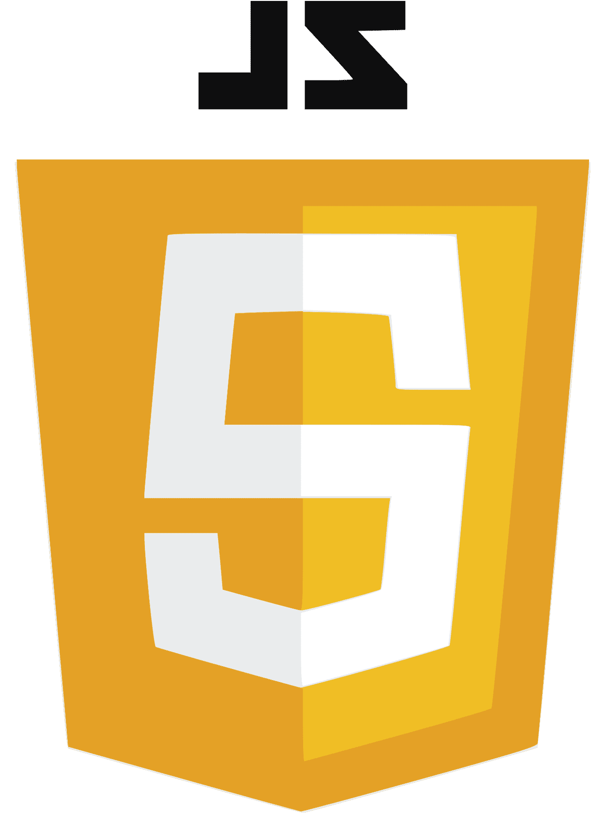

• Presentacion personal
Desde muy pequeño siempre me intereso el mundo de la programacion y la tecnologia, es por eso que decidi estudiar Diseño y Desarrollo de Software en Tecsup, actualmente ando en mi tercer ciclo academico y espero en un futuro poder dedicarme a la creacion de programas trabajando en una empresa
• Lenguajes de programacion

Python |

Java |

Javascript |
|---|
• Formacion profesional
Educacion secundaria obligatoria
Daniel Becerra Ocampo - Moquegua
Marzo de 2016 -
Diciembre de 2021
Cursos Adicionales y Seminarios
Curso de Ingles Nivel Basico -
Conversa (300 horas)
Curso Get connected - Cisco Networking Academy (30 horas)
• Idiomas
- Español (Nativo)
- Ingles (A2)
• Datos personales
Lugar y fecha de nacimiento: 23 de Diciembre de 2004 - Ilo
DNI: 43724030
Telefono: 998694568
Email: jorge.manzano@tecsup.edu.pe
• Mis redes

|

Youtube |

|
|---|